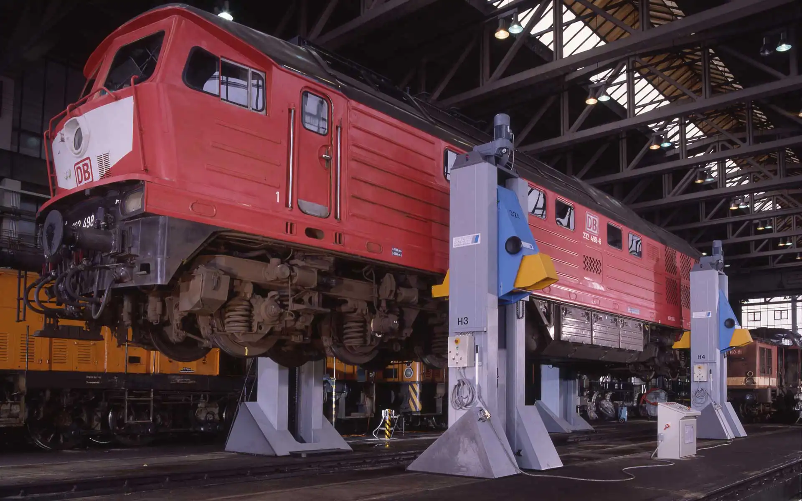
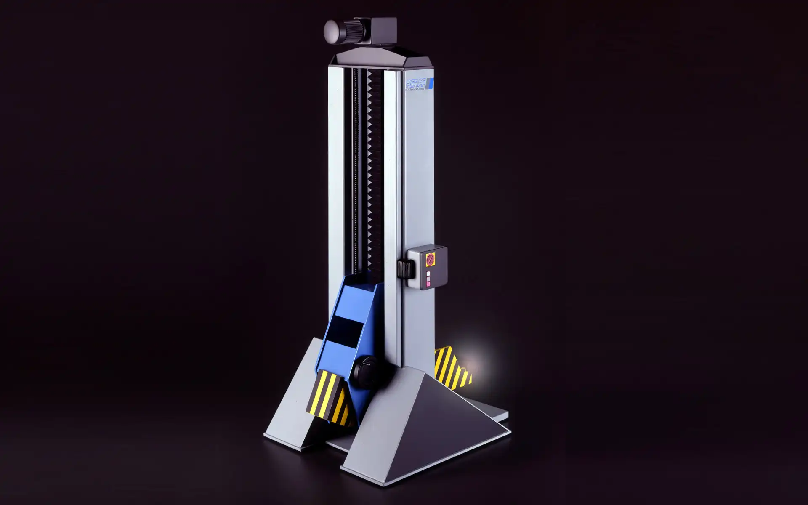

Mobile Lifting Jack for Railbound Vehicles
Pfaff-silberblau, 1994
Hebebock für Schienenfahrzeuge
Pfaff-silberblau, 1994
Heavy-duty lifting jacks are used to lift rail vehicles—locomotives, carriages, subway trains.
They are the rail industry’s equivalent of the service station car jack except of course that they are
much more powerful. The lifting jacks of Pfaff-silberblau can lift up to a weight of 140 tonnes and they
let their muscles play worldwide, for example for the London Underground, for the SBB Bellinzona in
Switzerland and for the Metro in Athens, Greece.
One of the design objectives for the lifting jack was a structural and operational improvement. The
overall shape signals its function very clearly: vertical lifting from a strong base. The running gear
with its hydraulic systems was given a pronounced wedge shape to visualise the working direction of the
lifting jack and to make its high level of stability apparent. The lines are simple and straightforward,
allowing the components of the housing to be produced more cheaply with simple cutting of the sheet
steel.
The design of the units visualizes a high level of functional transparency and at the same time it
improves the static of the construction. Expensive reinforcement sheets are not necessary any more, and
as a result material will be saved.
Mit Hebeböcken dieser Art werden Schienenfahrzeuge u.a. Lokomotiven, Waggons, U-Bahnzüge angehoben.
Sie haben eine Tragkraft von bis zu 140 Tonnen und sind das Pendant zum Wagenheber, aber natürlich
ungleich stärker. Egal, ob die London Underground, Schweizer Bundesbahn Bellinzona oder die Athener
Metro—die Hebeböcke von Pfaff-silberblau lassen ihre Muskeln weltweit spielen.
Eines der Designziele war die konstruktiv-funktionale Verbesserung der neuen Hebeböcke gegenüber den
Vorgängermodellen. So signalisiert die Gesamtgestalt sehr deutlich die Funktion des Gerätes: senkrechtes
Heben von einer starken Basis aus. Das Fahrwerk ist bewusst keilförmig gestaltet, um die Arbeitsrichtung
des Hebebockes zu betonen und um die hohe Standfestigkeit sichtbar zu machen. Die Linienführung ist
geradlinig klar, auch deshalb, weil die Blechteile des Gehäuses so mit einfachen Blechzuschnitten
kostengünstiger produziert werden.
Das Design visualisiert nicht nur eine hohe Funktionstransparenz, sondern verbessert zugleich den
statischen Aufbau. Aufwendige Versteifungsbleche entfallen und folglich wird erheblich Material gespart.


Images © Selić Industriedesign